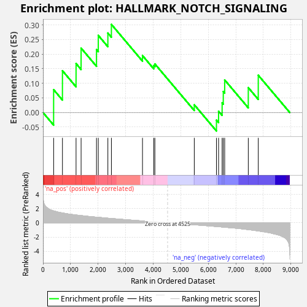
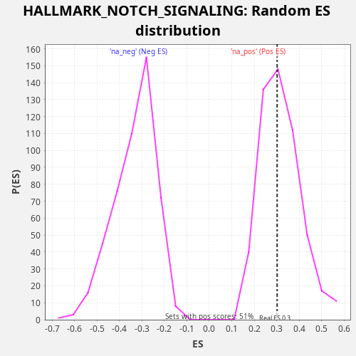

| Dataset | star_PE_rank_metric |
| Phenotype | NoPhenotypeAvailable |
| Upregulated in class | na_pos |
| GeneSet | HALLMARK_NOTCH_SIGNALING |
| Enrichment Score (ES) | 0.30230552 |
| Normalized Enrichment Score (NES) | 0.9504735 |
| Nominal p-value | 0.5233463 |
| FDR q-value | 1.0 |
| FWER p-Value | 1.0 |

| SYMBOL | RANK IN GENE LIST | RANK METRIC SCORE | RUNNING ES | CORE ENRICHMENT | |
|---|---|---|---|---|---|
| 1 | FZD7 | 387 | 1.673 | 0.0784 | Yes |
| 2 | PRKCA | 707 | 1.384 | 0.1433 | Yes |
| 3 | FBXW11 | 1201 | 1.097 | 0.1679 | Yes |
| 4 | ST3GAL6 | 1384 | 1.009 | 0.2208 | Yes |
| 5 | DTX4 | 1943 | 0.790 | 0.2159 | Yes |
| 6 | SAP30 | 2008 | 0.768 | 0.2645 | Yes |
| 7 | ARRB1 | 2356 | 0.644 | 0.2726 | Yes |
| 8 | WNT2 | 2484 | 0.605 | 0.3023 | Yes |
| 9 | CUL1 | 3613 | 0.264 | 0.1953 | No |
| 10 | JAG1 | 4021 | 0.152 | 0.1609 | No |
| 11 | WNT5A | 4062 | 0.142 | 0.1667 | No |
| 12 | PPARD | 5493 | -0.272 | 0.0265 | No |
| 13 | NOTCH3 | 6298 | -0.513 | -0.0262 | No |
| 14 | DTX2 | 6375 | -0.538 | 0.0045 | No |
| 15 | CCND1 | 6504 | -0.589 | 0.0329 | No |
| 16 | APH1A | 6546 | -0.600 | 0.0720 | No |
| 17 | PSEN2 | 6597 | -0.623 | 0.1117 | No |
| 18 | PSENEN | 7454 | -0.954 | 0.0853 | No |
| 19 | NOTCH2 | 7816 | -1.141 | 0.1278 | No |
